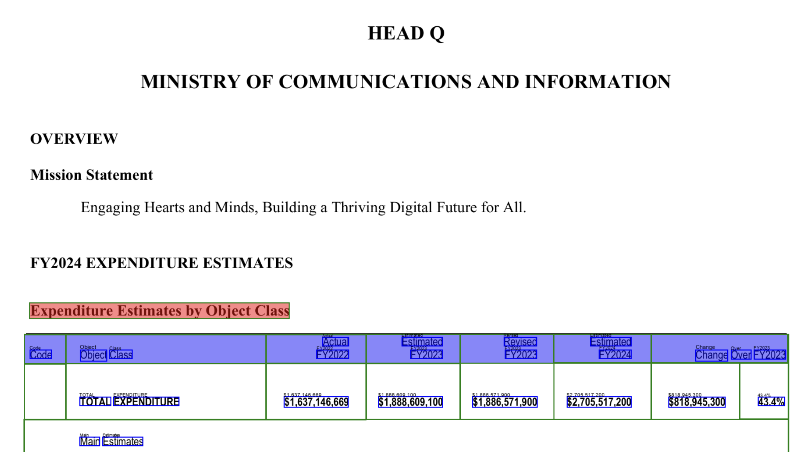

Parsing the Singapore Budget 2024 with AWS Textract
Structured document extraction for Public Data
 Using AWS Textract on the Singapore Budget Expenditure Reports
Using AWS Textract on the Singapore Budget Expenditure Reports
Table of Contents
Data for the Masses: Structured document parsing with Textract on the Singapore Budget 2024
Budget 2024 and its reach
On the 16th of February, Deputy Prime Minister and Minister for Finance Lawrence Wong spoke at length in the Singapore Parliament on the Singapore 2024 Budget. A number of explainers on the budget to detail who gets what and when are readily available 1, 2. At the same time, going into details of the budget would be also beneficial for the more inquisitive individuals who are simply looking to get an insight of the fine print. For example, getting information on SimplyGo debacle with respect to contextualising the costs of the overall Fare Collection and Ticketing system.
The Problem
While that specific line item can be interesting to some, having to trawl through the reports can be time consuming, especially when looking across a longer time scale. For example, large CAPEX projects take 5-10 years to come to fruition, and tracking such line items can prove to be daunting if one were to look at the overall government expenditure.
Due to this perceived limitation, I wanted to understand if there was a way in which one can obtain more detailed information about the budget in a more structured approach.
Looking at Public Data - What’s Available on the Budget?
In Singapore, (official) structured public data can be found in a number of key sites. There are two main established sites for data: the first being data.gov.sg which is maintained by Open Government Products Singapore and secondly SingStat which is run by the Department of Statistics Singapore.
On the Singapore budget, only top level data is provided - e.g. Overall Expenditure and Revenue. An example of such a dataset is the Government Budget and Fiscal Position, where granularity stops at the Ministerial level and no information of its constitutent expenditure is provided. An example from Data.gov.sg is provided in the screenshot below.
While limiting, as mentioned in the introduction, all is not lost. Line item information is at least published by the Ministry of Finance in PDF-formatted reports similar to a financial report statement. In order to quench my curiosity, another way forward is needed.
The Approach
In the early stages of this thought exercise, 4 ways of extracting information from the expenditure reports were investigated and evaluated based on 4 aspects (not ranked) : 1. Scalability 2. Maintanability 3. Cost 4. Reliability (Trustworthiness)
| Solution | What | Pros | Cons |
|---|---|---|---|
| Manual Extraction | Crowd source or manually extract information from the reports | Subjective. Time Consuming. Does not scale | |
| Ask ChatGPT | Feed the PDF into a Large Language Model (LLM) | Conceptually simple | Hallucination is possible in the outputs. Can be costly (Cost per token * document length) |
| Use Public PDF Parsers | Use open source parsers (tesseract, tabula, pyPDF) | Free. Local Development Possible | Not out of the box, configuration necessary |
| Use a Paid Service | Use Document Intelligence Services from Cloud Providers (AWS, GCP, Azure) | Production Grade | Can be costly. Need to develop in cloud |
ChatGPT or more specifically GPT-4 was used in the evaluation and unfortunately did not produce adequately satisfactory results. For example, the JSON output was not easily understandable and there was a risk of model hallucination that would make the data unreliable. While prompt engineering might be useful in ensuring the document is able to be parsed well, it was outside the scope of the investigation. There may be a use case for large scale knowledge management when the LLM can be used to directly query a backend database to produce deeper levels of insight but again, it was out of scope.
For manual extraction and open source PDF parsers, it was briefly investigated but did not produce results that were (1) Scalable and (2) Reliable. To this end, the decision was to use a paid solution to parse the reports. While Google and Azure both have document intelligence expertise that can work with extracting information from PDFs, AWS Textract offered the best out-of-the-box functionality for extracting specifically tabular data in a PDF. This would clearly make it much easier for downstream ingestion and analysis tasks.
The Solution : AWS Textract
From the AWS Textract website
Amazon Textract is a machine learning (ML) service that automatically extracts text, handwriting, layout elements, and data from scanned documents. It goes beyond simple optical character recognition (OCR) to identify, understand, and extract specific data from documents.
For simple cases, AWS does offer a user interface to parse documents of less than a few pages (maximum 150 in one batch). However, I needed to process the financial reports across long time horizons and using a web interface would not suit my needs. Thus in my usecase, it was needed to also include other AWS related components such as object storage (S3), a queue service (SQS) and a notification service in order to receive notifications from the Textract service such that I had a scalable document parsing pipeline. To accomplish this, the system architecture as illustrated below was used:
In this approach, the document parsing is done in the following manner:
- The PDF document (i.e. the PDF file containing the expenditure information) is uploaded
- In doing so, this would place an object in the “Processing” queue
- This triggers a lambda function that will call the Textract service
- The textract service sends a notification to the notification service that contains the status of the service for that particular document
- The object is then placed in a result queue
- This triggers another lambda function to turn the results into a JSON
- The JSON file is then pushed to a seperate output bucket which is then available to the user
Result
Using this approach,an example is given for the Ministry of Communications and Information (MCI) expenditure estimate. We start of with a basic PDF table:
As you can already see, it has a PDF table that needs some parsing into a structured form. We then use AWS Textract to parse and we obtain a result. We then visualize the output of the textract service using the amazon-textract-textractor python library.4 This overlays the result of the extraction service over the document.
from textractor.entities.document import Document
document = Document.open("PATH_TO_YOUR_JSON")
# This is only possible because we linked each page of a PDF to the page object in the document
document.tables[0].visualize()
And we get: 
The various colors correspond to the Table title, section headers and sub-headers! This is already very useful to start before converting this information into a more understandable dataset :)
Conclusion
This is of course just the first big step in turning the information in the PDFs into a well-structured dataset. Next steps include: Defining a result parser to ensure that the section and subsection headers are well accounted for, ingesting the information into a database and so on.
The key takeaway from this is that we have a way to deal with unstructured official data and this goes a long way in ensuring that as a whole, availability to less structured forms of data can be made available in the near future to the general public.
Post-script
- The total AWS cost for parsing 3 years worth of budget reports is ~30 USD.
- The final database will eventually be made available to the public free of charge, but don’t ask when….
Disclaimer
I do not have affliations to AWS or any entities mentioned in this write-up. All attributions are provided at a best-effort basis and the use of any information from this page is at your own risk.
References
- https://www.mof.gov.sg/singaporebudget/resources/budget-infographics
- https://www.straitstimes.com/singapore/government-revenue-in-fy2023-better-than-expected-small-budget-surplus-of-08b-expected-for-fy2024
- Structured data is one that can be readily interpreted and reused in other analytical software, this is differentiated from unstructured data which requires additional intervention to make the data usable for downstream analytics and visualization tasks.
- Note that you do not have to use the architecture to process 1-2 files. You might want to use the AWS console for that